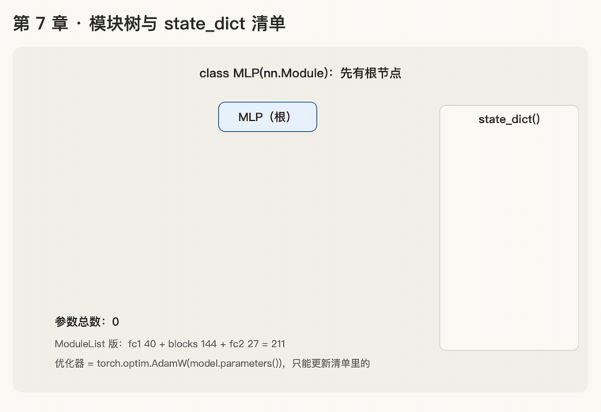

第 7 章 · nn.Module：一棵自动登记参数的积木树
本章回答：写模型为什么要继承
nn.Module？model.parameters()怎么知道有哪些参数？state_dict是什么？train()/eval()到底切换了什么？hook 能干嘛？
讲解日期：2026-11-14 · 上一章：第 6 章 torch.compile · 下一章：第 8 章 DataLoader
对应原文：00-overview.md §3；官方教程「Build the Neural Network」与torch.nn.Module文档（〔在线〕）；《深入浅出 PyTorch》第 5 章 模型定义（〔在线〕datawhalechina.github.io/thorough-pytorch）；本章输出在本机 torch 2.15.0 上跑过（代码见本章末尾"代码对照"）本章缩写：MLP = Multi-Layer Perceptron（多层 / 感知机，几层全连接叠起来）；fc = fully connected（全连接层）；BN = BatchNorm（批归一化）；全部缩写见 附录 · 缩写与术语表
讲解
第一步：继承 Module = 自动登记（2026-11-14）
类比：公司组织架构。 公司（模型）下面有部门（子模块），部门下面有员工（参数）。新员工入职，HR 自动登记到花名册。你要发工资（更新参数）时，问 HR 要花名册就行，不用自己一个个找。
nn.Module 就是这个 HR。在 __init__ 里把子模块或参数赋值给 self.xxx，它就自动登记：
class MLP(nn.Module):
def __init__(self):
super().__init__() # 必须先调，HR 才上岗
self.fc1 = nn.Linear(4, 8)
self.drop = nn.Dropout(0.5)
self.fc2 = nn.Linear(8, 3)
def forward(self, x):
return self.fc2(self.drop(F.relu(self.fc1(x))))
m = MLP()
[(n, tuple(p.shape)) for n, p in m.named_parameters()]
# [('fc1.weight', (8, 4)), ('fc1.bias', (8,)), ('fc2.weight', (3, 8)), ('fc2.bias', (3,))]
sum(p.numel() for p in m.parameters()) # 67
数字演示：67 = fc1（4 × 8 + 8 = 40）+ fc2（8 × 3 + 3 = 27）。nn.Linear(4, 8) 的权重形状是 (8, 4)：输出维在前（计算是 \(y = xW^\top + b\)）。
登记规则：
| 写法 | 会被登记吗 |
|---|---|
self.fc = nn.Linear(...) |
✓ 子模块 |
self.w = nn.Parameter(torch.randn(3)) |
✓ 参数（会被优化器更新） |
self.register_buffer("mask", t) |
✓ buffer（缓冲区：跟着模型走、会存盘，但不训练，比如 BN 的均值、因果 mask） |
self.layers = [nn.Linear(...), ...]（普通 list） |
✗ 不会登记！要用 nn.ModuleList |
self.t = torch.randn(3)（普通张量） |
✗ 不登记，不会跟着 .to(device) 搬 |
普通 list 是最常见的坑：参数不进 parameters()，优化器看不到，训练时这几层根本不更新，也不报错。
调用模型要写 m(x)，不写 m.forward(x)：m(x) 会先跑 hook（第四步）再调 forward；直接调 forward 会跳过它们（第 19 章 FSDP2 就靠 hook 工作）。
一句话：赋值给 self 的子模块和 nn.Parameter 会被自动登记；普通 list 不登记，要用 ModuleList。
第二步：一棵树 + 一张清单（state_dict）（2026-11-14）
登记下来的东西组成一棵树，名字用点连起来：
[n for n, _ in m.named_modules()] # ['', 'fc1', 'drop', 'fc2'] ('' 是根)
list(m.state_dict().keys()) # ['fc1.weight', 'fc1.bias', 'fc2.weight', 'fc2.bias']
state_dict（状态字典） = "名字 → 张量"的清单，包含所有参数和 buffer。保存模型就是保存这张清单（第 10 章）。名字（叫 FQN，fully qualified name：完整限定名）就是在树上的路径，比如 layers.3.attn.q_proj.weight。
一行做到很多事，全靠这棵树：
| 写法 | 做什么 |
|---|---|
m.to("cuda") / m.to(torch.bfloat16) |
递归把所有参数和 buffer 搬过去 / 转类型 |
m.parameters() |
交给优化器 |
m.zero_grad() |
清所有梯度 |
m.apply(fn) |
对每个子模块调一次 fn（常用来自定义初始化） |
m.requires_grad_(False) |
冻结整棵子树（微调时冻结骨干） |
一句话：模块组成一棵树，路径就是名字；state_dict 是"名字 → 张量"的清单，搬设备、转类型、存盘都是沿着树递归。
第三步：train() / eval()——两种工作状态（2026-11-14）
有些层在训练和推理时行为不同，最典型的是 Dropout（随机丢弃） 和 BatchNorm。
Dropout：训练时随机把一部分数清零（防止过拟合），剩下的放大 \(\frac{1}{1-p}\) 倍保持期望不变：
torch.manual_seed(0)
d = nn.Dropout(0.5); d.train()
d(torch.ones(8)) # tensor([0., 0., 2., 0., 0., 0., 2., 2.]) ← 留下的变成 2 = 1/(1-0.5)；丢哪几个是随机的
推理时 Dropout 什么都不做。model.eval() 就是递归把每个子模块的 training 标志设为 False：
m.train(); m(x); m(x) # 两次输出不同（随机丢弃不一样）
m.eval(); m(x); m(x) # 两次输出相同
BatchNorm：训练时用当前 batch 的均值方差，并更新 running mean（buffer）；eval 时用存下来的 running mean。忘了切 eval，推理结果会随 batch 变化。
注意：eval() 不会关掉记账。推理要同时：
model.eval() # 切换层的行为
with torch.inference_mode(): # 关掉 autograd（第 3 章）
pred = model(x)
一句话：train/eval 只切换 Dropout、BN 这类层的行为，不管梯度；推理要 eval() + inference_mode() 两样都做。
第四步：hook——在模块进出口装探头（2026-11-14）
hook（钩子） = 在某个模块前向（或反向）执行前后，自动调用你给的函数。不改模型代码就能看中间结果、改中间结果。
h = m.fc1.register_forward_hook(lambda mod, inp, out: print("fc1 输出", tuple(out.shape)))
m(x) # 打印：fc1 输出 (1, 8)
h.remove() # 用完拆掉
常见用途：
| 用途 | 用哪种 hook |
|---|---|
| 看每层激活的大小、找 NaN | register_forward_hook |
| 看每层梯度的大小 | register_full_backward_hook 或张量的 register_hook |
| 提取中间特征（迁移学习） | forward hook 存下 out |
| 框架功能：FSDP2 在前向前收集参数、DDP 在梯度算好时发通信 | 框架自己注册的 hook（第 18、19 章） |
一句话：hook = 模块进出口的探头；调试看激活和梯度，分布式框架也靠它插入通信。
动画演示：模块树与 state_dict

可交互版：animations/07-module-tree.html。开关：用 nn.ModuleList / 用普通 list。
怎么看：
- 左边是模块树，从根
MLP往下展开；每登记一个参数，右边 state_dict 清单多一行，参数计数器累加； - 切到"普通 list"：list 里的两层画成虚线，不进清单、不计数，优化器看不到；
- 最后一帧点亮
drop：它没有参数，但受train/eval影响。
练习与作答记录
题 1：nn.Linear(10, 5) 有多少个参数？权重的形状是什么？
作答：（待作答）
题 2：下面的模型训练时，blocks 里的层会被更新吗？为什么？怎么改？
class Net(nn.Module):
def __init__(self):
super().__init__()
self.blocks = [nn.Linear(16, 16) for _ in range(4)]
self.head = nn.Linear(16, 2)
作答：（待作答）
题 3：一个带 Dropout 的模型，推理时忘了 model.eval()，会有什么现象？只写了 model.eval() 没写 inference_mode()，又会怎样？
作答：（待作答）
口诀
继承 Module 有 HR，赋给 self 自动登记；普通 list 不登记，要用 ModuleList；
模块成树、路径成名，state_dict 是名字到张量的清单；
train/eval 切层的行为，不管梯度；hook 是进出口的探头。
本章复习卡片
- P21（登记规则：子模块 / Parameter / buffer 会登记；普通 list、普通张量不会 → ModuleList；
nn.Linear(4, 8)权重 (8, 4)） - P22（state_dict = FQN → 张量清单，含参数和 buffer；
.to/parameters/apply沿树递归） - P23（train/eval 只切 Dropout、BN 行为；Dropout 训练时留下的放大 1/(1−p)；推理 = eval + inference_mode）
附录 · 延伸阅读
推荐阅读
| 读什么 | 读哪里 | 读它为了什么 |
|---|---|---|
★ 官方 torch.nn.Module 文档 |
register_buffer、state_dict、apply、hook 各方法（〔在线〕） |
本章每个 API 的完整参数 |
| ★ 《深入浅出 PyTorch》 | 第 5 章 模型定义（Sequential / ModuleList / ModuleDict）（〔在线〕） | 中文的三种容器对比 |
| CS336 a1 handout | §3「Transformer 语言模型」各小节（cs336-spring2025/materials/text/ 里的 assignment1 handout） |
不许用 nn.Linear，自己用 nn.Parameter 写 Linear / Embedding / RMSNorm，是本章最好的练习 |
| Srivastava et al. 2014「Dropout」 | §2 动机（〔在线〕JMLR） | 为什么训练时随机丢弃 |
数学原理
- Linear：\(y = xW^\top + b\)，\(W \in \mathbb{R}^{d_{out} \times d_{in}}\)，参数量 \(d_{in} d_{out} + d_{out}\)。
- Dropout 的期望不变：每个数以概率 \(1-p\) 保留并乘 \(\frac{1}{1-p}\)，期望 \(= (1-p) \cdot \frac{x}{1-p} = x\)，所以推理时直接用 \(x\)。
公式 / 代码清单
| 写法 | 意思 |
|---|---|
nn.Parameter / register_buffer |
要训练的 / 跟着走但不训练 |
nn.Sequential / nn.ModuleList / nn.ModuleDict |
顺序调用 / 列表 / 字典容器 |
named_parameters() / named_modules() / state_dict() |
遍历参数 / 遍历模块 / 清单 |
train() / eval() / requires_grad_(False) |
切行为 / 冻结 |
register_forward_hook / register_full_backward_hook |
前向 / 反向探头 |
代码对照：把本章的数字用代码算一遍
用 torch 把讲义里的数字跑一遍。代码在仓库本地
pytorch-deep-dive/solutions/chapter-code/ch07_nn_module.py，配套测试tests/test_ch07_15.py；同一章的 notebook：notebooks/ch07_nn_module.ipynb（讲解和代码放在一起，一格一格边读边跑）。Mac 上直接能跑，不需要 GPU：
bash cd pytorch-deep-dive/solutions/chapter-code uv run python ch07_nn_module.py # 一步一步打印 uv run pytest tests/test_ch07_15.py
讲义 ↔ 代码：
| 讲义 | 公式 / 说法 | 写法 | 跑出来 |
|---|---|---|---|
| 第一步 自动登记 | 40 + 27 | count(MLP()) |
67 |
| 第一步 普通 list 不登记 | — | count(PlainList()) |
只剩 head 的 34 个 |
| 第二步 模块树 | — | named_modules() |
['', 'fc1', 'drop', 'fc2'] |
| 第三步 Dropout | 留下的 × 1/(1−p) | dropout_once()（种子 0） |
[0, 0, 2, 0, 0, 0, 2, 2] |
| 第三步 train / eval | — | train_eval_repeat() |
(False, True) |
关键几行：
self.fc1 = nn.Linear(4, 8) # 赋给 self：自动登记
self.blocks = [nn.Linear(16, 16)] # 普通 list：不登记！
sum(p.numel() for p in m.parameters()) # 67
m.eval(); m(x); m(x) # 两次一样
代码里才看得到的 2 件事：
nn.Linear(4, 8).weight是 (8, 4)：存的是转置，输出维在前。- 普通 list 不报错：参数只是悄悄没进
parameters()，训练时那几层不更新。
自己改一改（不影响练习答案）：
- 把
PlainList的 list 换成nn.ModuleList，再数参数。 - 换几个随机种子调
dropout_once，看每次丢的位置不同、但留下的都是 2。